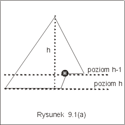
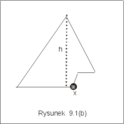
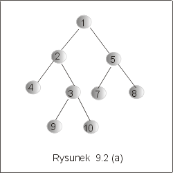
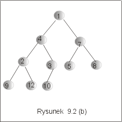
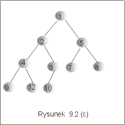

| « poprzedni punkt | nastêpny punkt » |
Struktura kopca jest przyk³adem etykietowanego drzewa binarnego, wywa¿onego. Nie jest to jednak drzewo binarnych poszukiwañ. Zasady etykietowania wierzcho³ków s± inne, chocia¿ tak jak w przypadku drzew binarnych poszukiwañ, zak³ada siê, ¿e zbiór etykiet jest liniowo uporz±dkowany. Co wiêcej, kopiec, jako drzewo doskona³e, ma wszystkie ¶cie¿ki prawie tej samej d³ugo¶ci. Zestaw dostêpnych operacji w kopcu te¿ jest inny ni¿ w drzewach binarnych poszukiwañ. Kopce stanowi± strukturê danych, w której zwykle wykonujemy operacje wstawiania, znajdowana i usuwania minimum. S± to operacje charakterystyczne dla struktur zwanych kolejkami priorytetowymi. Bêdzie o tym mowa w nastêpnym wyk³adzie. Ten punkt wyk³adu po¶wiêcimy definicji kopca.
Definicja 1.1 Powiemy, ¿e drzewo binarne jest doskona³e wtedy i tylko wtedy, gdy wszystkie poziomy drzewa s± maksymalne zape³nione z wyj±tkiem byæ mo¿e ostatniego poziomu, na którym wszystkie li¶cie s± zgrupowane maksymalnie na lewo.
Na mocy definicji 1.1, je¶li z drzewa doskona³ego o wysoko¶ci h, usuniemy wszystkie li¶cie z ostatniego poziomu, to otrzymamy pe³ne drzewo binarne o wysoko¶ci h-1 (por. rysunek 9.1 (a)). Charakterystyczny kszta³t drzewa doskona³ego przedstawiono na rysunku 9.1 (b). Zaznaczone wierzcho³ki pe³ni± specjaln± rolê przy wykonywaniu operacji na drzewie doskona³ym.
|  |  |
Drzewo doskona³e o wysoko¶ci h, ma wiêc co najwy¿ej 2h+1 -1 i co najmniej 2h wierzcho³ków.
Lemat 1.1 Dla dowolnego drzewa doskona³ego o n wierzcho³kach i wysoko¶ci h zachodz± nierówno¶ci :
2h -1 < n £ 2h+1-1 .
lg(n+1)-1 £ h < lg(n+1)
W konsekwencji, wysoko¶æ h drzewa doskona³ego o n wierzcho³kach wynosi h = ëlg(n+1)û.
Definicja 1.2 Powiemy, ¿e etykietowane drzewo binarne D = <V, E, et> jest czê¶ciowo uporz±dkowane wtedy i tylko wtedy, gdy dla dowolnego v ÎV, etykieta wierzcho³ka v jest mniejsza ni¿ etykiety obu jego synów,
("vÎV) et(v) < et(v.left) Ù et(v) < et(v.right).
Z przyjêtej definicji 1.2 wynika natychmiast, ¿e w dowolnym drzewie czê¶ciowo uporz±dkowanym:
- etykiety znajduj±ce siê na dowolnej drodze od korzenia do dowolnego li¶cia tworz± ci±g rosn±cy,
- element najmniejszy jest etykiet± korzenia.
Przyk³ad 1.1
Drzewo przedstawione na rysunku 9.2(a) nie jest kopcem, bo nie jest to drzewo doskona³e. Natomiast jest to drzewo czê¶ciowo uporz±dkowane: nastêpniki ka¿dego wierzcho³ka maj± etykiety wiêksze od etykiety tego wierzcho³ka. Drzewo przedstawione na rysunku 9.2(b) jest drzewem doskona³ym: do przedostatniego poziomu jest to pe³ne drzewo binarne, a li¶cie na ostatnim poziomie s± zgrupowane maksymalnie na lewo. Nie jest to jednak kopiec, poniewa¿, np. wêze³ z etykiet± 4 ma oba nastêpniki opatrzone etykietami mniejszymi od 4. Drzewo przedstawione na rysunku 9.2(c) jest kopcem, bo jest to drzewo doskona³e i czê¶ciowo uporz±dkowane.
|  |  |  |
Uwaga Przedstawione w tym wyk³adzie kopce s± etykietowane zwykle liczbami naturalnymi i porz±dek £ jest zwyk³ym porz±dkiem w zbiorze liczb naturalnych. Nie jest to jednak obowi±zuj±ca regu³a: etykiety mog± byæ elementami dowolnego zbioru liniowo uporz±dkowanego, a relacja £ mo¿e byæ dowoln± relacj± liniowego porz±dku. W szczególno¶ci, mo¿e to byæ relacja ³ w zbiorze liczb rzeczywistych.
Pytanie 1: Czy jest prawd±, ¿e w kopcu d³ugo¶ci ¶cie¿ek od korzenia do li¶ci ró¿ni± siê co najwy¿ej o 1?
| « poprzedni punkt | nastêpny punkt » |